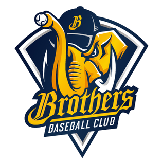
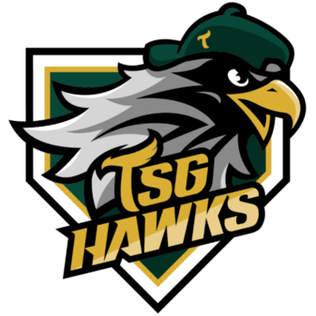
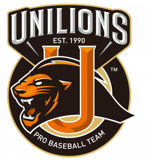
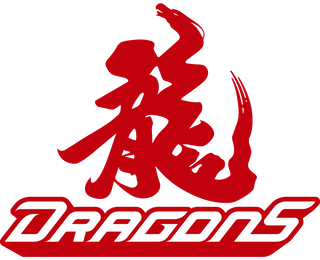

Teams
The Chinese Professional Baseball League (CPBL) in Taiwan typically consists of six teams. These teams compete against each other in the league's regular season and playoffs to determine the champion.
*Please swipe the table with your finger or mouse.
| Logo | Name | Location | Home of Stadium | Founded | Joined | Webside |
|---|---|---|---|---|---|---|
|  | CTBC Brothers | Taichung | Taichung Intercontinental Baseball Stadium | 1984 | 1990 | https://www.brothers.tw/ |
| Fubon Guardians | New Taipei City | Xinzhuang Baseball Stadium | 1989 | 1993 | https://www.fubonguardians.com/ | |
| Rakuten Monkeys | Taoyuan City | Rakuten Taoyuan Baseball Stadium | 2003 | 2003 | https://monkeys.rakuten.com.tw/ | |
|  | TSG Hawks | Kaohsiung City | Kaohsiung Chengching Lake Baseball Field | 2003 | 2003 | https://www.tsghawks.com/ |
|  | Uni-President 7-Eleven Lions | Tainan City | Tainan Municipal Baseball Stadium | 1989 | 1990 | https://www.uni-lions.com.tw/ |
|  | Wei Chuan Dragons | Tainan City | Taipei Tianmu Baseball Stadium | 2019(refounded) | 2020(reactivated) | https://www.wdragons.com/CWS/ |